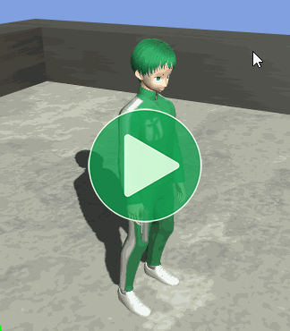
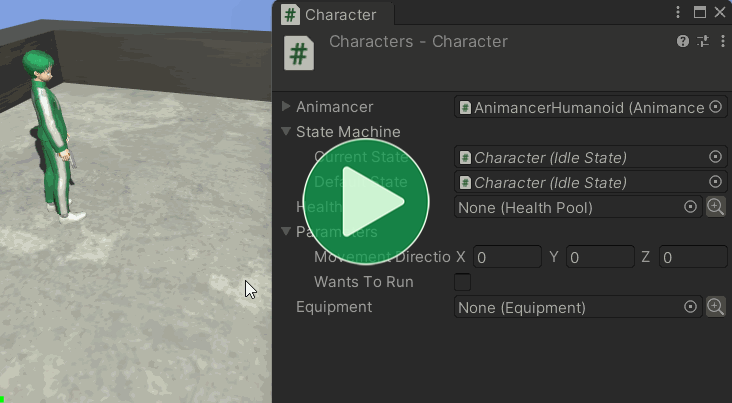
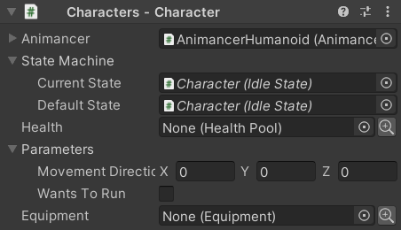
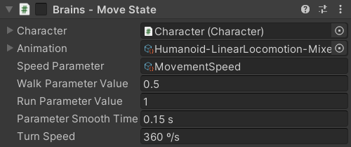
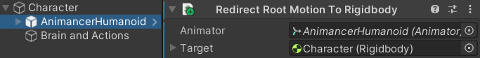

Location: Samples/06 State Machines/03 Brains
Recommended After: Characters and Linear Mixer
Learning Outcomes: in this sample you will learn:
How to separate inputs from actions and why doing so is useful.
How to organize other parts of a character's logic beyond their state machine.
How to make a character turn in the direction they want to move.
Summary
This sample expands upon the Characters sample to demonstrate the concept of "brains" for controlling a character using player input, AI, or any other decision making process separately from the systems that determine what they can do or how they do it.
- Separating the logic that controls what a character wants to do into a separate script from the logic that controls what they actually can do and the execution of those actions can greatly improve the flexibility and reusability of your code.
- Using a central class to hold parameters such as the direction the character wants to move is an effective way of communicating between the brain and the character's other scripts.
Controls
- WASD = Walk
- WASD + Left Shift = Run
- Left Click = Shoot
Overview
The general code structure of the Characters sample can still be seen here, but there are some notable changes and additions.
{kind=link}
| Change | Description |
|---|---|
CapsuleCollider and Rigidbody |
Allows the character to move around the scene without going through walls. |
CharacterParameters |
Used for communicating between the brain and other components. The Character component always had this field, but it wasn't used in earlier samples. |
RootMotionRedirect |
Takes the root motion from animations which would normally be applied to the character model and applies it to the Rigidbody instead. |
MoveState |
Replaces the second IdleState from earlier samples. It contains logic for walking, running, and turning based on the CharacterParameters. |
MovingCharacterBrain |
Replaces the SimpleCharacterBrain from earlier samples as the script that controls the character's actions based on user input. |
The additions from the Interruptions sample aren't included in this sample because they aren't relevant to the topics discussed here and would only add unnecessary complexity to the scene. But those components would still work if you wanted to add them (a HealthPool and FlinchState for the character, and ClickToInteract somewhere else in the scene).
Why Brains?
Consider the steps that are involved in getting a character to perform an action:
- Detect that the Left Mouse Button was pressed.
- Check if the character was already doing something else that would prevent them from performing the action.
- Play the action animation.
Only step 1 of that process is relevant to determining what the character wants to do (or in this case, what the player wants them to do) so that's the only part that goes in the brain. When it detects the button press it tells the character to attempt the action and leaves the remaining steps up to the other systems.
This Separation of Concerns means that each type of state only needs to be implemented once and will then be usable by any kind of character, whether it be the player, or an NPC. This also makes it easy to change the way a character is controlled without affecting the way any of their actions actually work, either by modifying the brain or by assigning a different brain.
The term "Brain" was chosen because it accurately describes its purpose, which is to control the behaviour of a Character. But feel free to use other terminology that suits you such as "Character Input".
Parameters
Earlier samples had the SimpleCharacterBrain telling the StateMachine when to enter a particular state, but in this sample the MoveState also needs to know which direction the brain wants to move and whether it wants to run or not. You could put those parameters in the brain or in the Character, but this sample uses a dedicated CharacterParameters class.

This class doesn't really need to be serializable since it's only set at runtime, but making it serializable means it can easily show the current parameter values in the Inspector which can be very helpful for debugging.
[Serializable]
public class CharacterParameters
{
The MovementDirection is a Vector3 indicating which way the character wants to move. If the brain wants to move slowly we can allow a small vector to be assigned, but we don't want to allow the brain to make the character move faster by just setting a larger vector so we use Vector3.ClampMagnitude to limit the magnitude of the assigned value to 1:
[SerializeField]
private Vector3 _MovementDirection;
public Vector3 MovementDirection
{
get => _MovementDirection;
set => _MovementDirection = Vector3.ClampMagnitude(value, 1);
}
WantsToRun doesn't need any special validation but we still want it to have a field with the [SerializeField] attribute so we use a ref property which allows the value to be get and set without needing to write the actual get and set methods:
[SerializeField]
private bool _WantsToRun;
public ref bool WantsToRun => ref _WantsToRun;
}
Parameters Field
The CharacterParameters is used as a serialized field in the Character class:
class Character
{
...
[SerializeField]
private CharacterParameters _Parameters;
public CharacterParameters Parameters => _Parameters;
}

Moving Character Brain
With the parameters defined, we're now ready to make a brain to control them. This new brain class is identical to SimpleCharacterBrain from the Characters sample, except for the UpdateMovement method:
public class MovingCharacterBrain : MonoBehaviour
{
[SerializeField] private Character _Character;
[SerializeField] private CharacterState _Move;
[SerializeField] private CharacterState _Action;
protected virtual void Update()
{
UpdateMovement();
UpdateAction();
}
private void UpdateMovement()
{
// This method is different and will be explained below.
}
private void UpdateAction()
{
if (SampleInput.LeftMouseUp)
_Character.StateMachine.TryResetState(_Action);
}
}
SimpleCharacterBrain and MovingCharacterBrain were implemented as completely separate scripts to keep each of these samples a bit more self-contained, but with a few changes they could utilise Inheritance to avoid needing to repeat so much of the same code.
- Remove the
sealedkeyword fromSimpleCharacterBrainso it can be inherited. - Change the
UpdateMovementmethod inSimpleCharacterBrainfromprivatetoprotected virtualso it can be overridden. - Change the
_Movemethod inSimpleCharacterBrainfromprivatetoprotectedso it can be accessed in an inheriting class. - Change the
UpdateMovementmethod inMovingCharacterBrainfromprivatetoprotected overrideso it replaces the method in the base class (SimpleCharacterBrain). - Remove everything else from
MovingCharacterBrainbecause it's all inherited from the base class now.
Where the SimpleCharacterBrain.UpdateMovement method only had to try to enter the Move or Idle state, this one also needs to set the MovementDirection and WantsToRun parameters.
First, it checks if the input is not zero:
private void UpdateMovement()
{
Vector2 input = SampleInput.WASD;
if (input != Vector2.zero)
{
It needs to take the user's 2D screen-space WASD input and convert that into a 3D world-space vector to set the MovementDirection. It's important to do this conversion here in the brain because this is where code that's specific to player input is supposed to go. It wouldn't make sense to do it in CharacterParameters or MoveState because those classes are supposed to be usable by any character and this conversion is only relevant to the player.
First, convert the 2D input directly into 3D on the XZ plane:
Vector3 movementDirection = new Vector3(input.x, 0, input.y);
Then have the Camera transform that direction, which essentially means rotating it by the current rotation of the camera:
Transform camera = Camera.main.transform;
movementDirection = camera.TransformDirection(movementDirection);
_Character.Parameters.MovementDirection = movementDirection;
And it still needs to try to enter the movement state:
_Character.StateMachine.TrySetState(_Move);
}
If the player isn't trying to move, clear the movement vector and return to idle:
else
{
_Character.Parameters.MovementDirection = Vector3.zero;
_Character.StateMachine.TrySetDefaultState();
}
And finally, indicate whether the character wants to run or not:
_Character.Parameters.WantsToRun = SampleInput.LeftShiftHold;
}
Why is the _Move field a base CharacterState instead of the more specific MoveState?
You might be wondering why the brain uses:
[SerializeField] private CharacterState _Move;
Instead of:
[SerializeField] private MoveState _Move;
It's because nothing in the brain actually cares what specific type of state it is, as long as it inherits from CharacterState to be usable in the Character's StateMachine.
In the Weapons sample, the brain needs to set the NextWeapon before entering the EquipState so that brain has an actual EquipState field.
But this sample isn't doing that so the field might as well be as unrestrictive as possible which means you could potentially use the same control logic on a different type of state without needing to modify this brain.
Move State
Where the earlier samples simply used an IdleState with a movement animation assigned, this time we have a proper MoveState which is responsible for Walking and Running as well as Turning:
public class MoveState : CharacterState
{
[SerializeField] private TransitionAsset _Animation;
[SerializeField] private StringAsset _SpeedParameter;
[SerializeField] private float _WalkParameterValue = 0.5f;
[SerializeField] private float _RunParameterValue = 1;
[SerializeField, Seconds] private float _ParameterSmoothTime = 0.15f;
[SerializeField, DegreesPerSecond] private float _TurnSpeed = 360;
private SmoothedFloatParameter _Speed;
protected virtual void Awake()
{
_Speed = new SmoothedFloatParameter(
Character.Animancer,
_SpeedParameter,
_ParameterSmoothTime);
}
protected virtual void OnEnable()
{
Character.Animancer.Play(_Animation);
}
protected virtual void Update()
{
UpdateSpeed();
UpdateTurning();
}
private void UpdateSpeed()
{
_Speed.TargetValue = Character.Parameters.WantsToRun
? _RunParameterValue
: _WalkParameterValue;
}
private void UpdateTurning()
{
Vector3 movement = Character.Parameters.MovementDirection;
if (movement == Vector3.zero)
return;
float targetAngle = Mathf.Atan2(movement.x, movement.z) * Mathf.Rad2Deg;
float turnDelta = _TurnSpeed * Time.deltaTime;
Transform transform = Character.Animancer.transform;
Vector3 eulerAngles = transform.eulerAngles;
eulerAngles.y = Mathf.MoveTowardsAngle(eulerAngles.y, targetAngle, turnDelta);
transform.eulerAngles = eulerAngles;
}
}

Walking and Running
MoveState is responsible for both walking and running. Two animation states managed by one logical state because they both use the same logic. This could be implemented by simply giving it two TransitionAsset fields, but then whenever it changes between them it would need to synchronize their times to avoid going from one part of the walk animation to a completely different part of the run animation. That problem is explained further in the Mixer Synchronization section and that's also the solution, because mixers already have inbuilt synchronization so this state can just reuse Idle-Walk-Run mixer from the Linear Mixer sample.
That means we need a bunch of additional details:
| Field | Purpose |
|---|---|
TransitionAsset _Animation; |
The mixer from the Linear Mixer sample. |
StringAsset _SpeedParameter; |
The name of the mixer's Parameter. |
private float _WalkParameterValue = 0.5f;private float _RunParameterValue = 1; |
The parameter values at which the character will Walk and Run. |
private float _ParameterSmoothTime = 0.15f; |
Mixers don't have any inbuilt Parameter Smoothing and we don't want to instantly snap between Walk and Run so this script needs to apply smoothing itself. |
We could apply smoothing by manually using functions like Mathf.MoveTowards or Mathf.SmoothDamp, but using a SmoothedFloatParameter handles that for us (using Mathf.SmoothDamp internally).
private SmoothedFloatParameter _Speed;
protected virtual void Awake()
{
_Speed = new SmoothedFloatParameter(
Character.Animancer,
_SpeedParameter,
_ParameterSmoothTime);
}
To update the speed, we simply set the TargetValue of that smoother using a Conditional Expression: if WantsToRun is true, it will set the target to _RunParameterValue, otherwise it will set it to _WalkParameterValue.
protected virtual void Update()
{
UpdateSpeed();
UpdateTurning();
}
private void UpdateSpeed()
{
_Speed.TargetValue = Character.Parameters.WantsToRun
? _RunParameterValue
: _WalkParameterValue;
}
With the target set, the smoother will automatically move the actual parameter value towards that value over time.
Root Motion
This sample moves the character around using Root Motion so this state doesn't do any actual moving. If you don't want to use Root Motion, you could give the Character a reference to their Rigidbody (or whatever character controller system you are using) and control it in this state as well.
Since the model (with the Animator and AnimancerComponent) is a child of the character's root (with the CapsuleCollider, Rigidbody, and Character) the root motion would normally be applied only to the model to move it independently of the character's physics. That's obviously undesirable so we Redirect the Root Motion to the parent Rigidbody instead.

Turning
Some games use additional animations to make the turning look more natural (such as leaning over if you turn while running) or the Quick Turn animations used in the 3D Game Kit sample, but for this sample we're just going to rotate the model around the Y axis.
So the MoveState script has a field to determine how fast it can turn (measured in degrees per second):
[SerializeField, DegreesPerSecond] private float _TurnSpeed = 360;
Firstly, it needs to make sure it actually has a MovementDirection, because it wouldn't know which way to turn if it somehow ended up in this state without the brain setting the direction:
private void UpdateTurning()
{
Vector3 movement = Character.Parameters.MovementDirection;
if (movement == Vector3.zero)
return;
Then it determines the angle it wants to turn towards:
float targetAngle = Mathf.Atan2(movement.x, movement.z) * Mathf.Rad2Deg;
Without going into the maths behind it, Mathf.Atan2 gives the angle of a vector in radians. So the state just feeds in the x and z values to get the angle around the y axis, then converts the result to degrees because Transform.eulerAngles uses degrees.
Then it calculate how far to rotate this frame:
float turnDelta = _TurnSpeed * Time.deltaTime;
Then it gets the Transform.eulerAngles, moves the y value towards the target angle, and applies those angles back to the Transform:
Transform transform = Character.Animancer.transform;
Vector3 eulerAngles = transform.eulerAngles;
eulerAngles.y = Mathf.MoveTowardsAngle(eulerAngles.y, targetAngle, turnDelta);
transform.eulerAngles = eulerAngles;
}
}
It rotates the DefaultHumanoid model independently from the root Character object because the Character has a CapsuleCollider and Rigidbody on it. The capsule is only a vague approximation of the character's shape anyway, so there's no need for the rotation to have any interaction with the physics system.
Conclusion
Now we have a character who can walk, run, turn, and shoot:
What Next?
| Sample | Topic |
|---|---|
| Weapons | Defining animations separately from the character (i.e. on weapons) and swapping between them dynamically. |
| Platformer Game Kit | A separate (free) package which demonstrates a much more complete character implementation for a 2D platformer game. In addition to its Player Input Brain it also has a Behaviour Tree Brain which controls the enemies using a simple node based system. |
| 3D Game Kit | A more complex character framework based on Unity's 3D Game Kit Lite. |